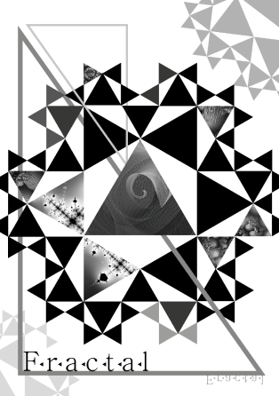
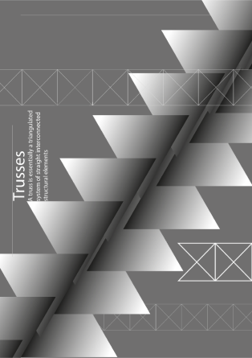
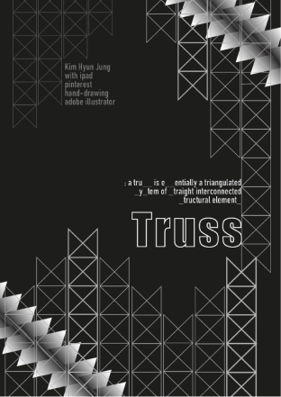
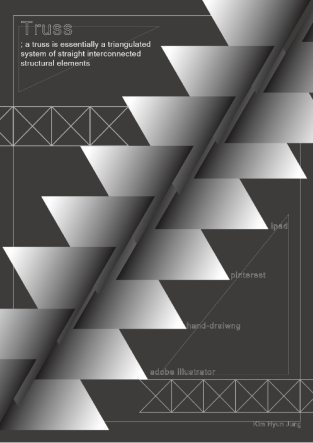
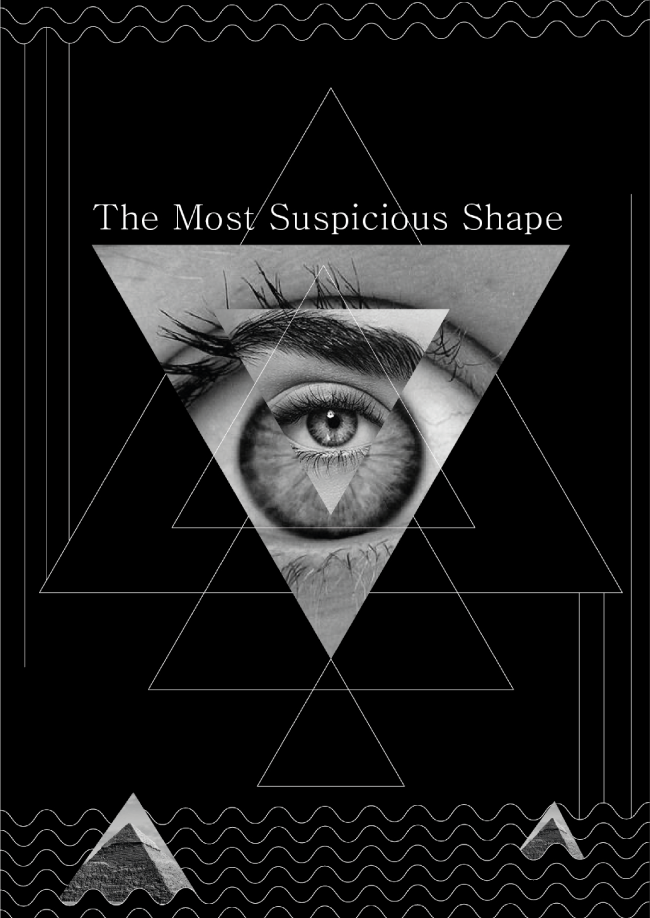
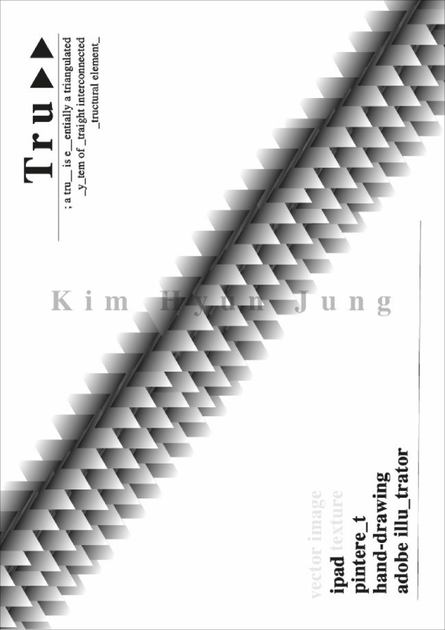
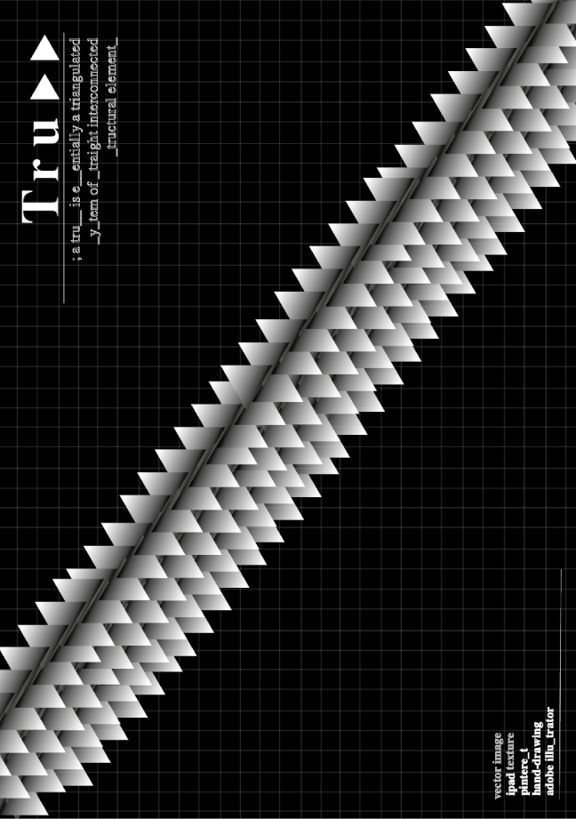

Project
Contact
khj317888@gmail.com
Designer
Shape Research
김현정
TR:ANGLE RESEARCH
Category
Shape Poster1 / Shape Poster2 / Shape Poster3
삼각형이라는 형태를 주제로, 파생된 개념들을 찾아 포스터를 구성하고 제작한다.
Truss, Fractal, The most Suspicious one
Truss
TRU>>
Poster
Poster
Poster
각각 인공적, 자연적, 심리적인 영역에서의 삼각형에 대해 생각해보고, 이에 따른
포스터를 제작한다.
1차 포스터 작업에서 나온 3가지 주제 중 트러스 구조를 주제로 파생된 3개의 포스터이다.
트러스 구조를 주제로 제작한 포스터이다. 삼각형의 축적을 통해 단단하고 연속적인
구조물의 모습을 표현했다.






